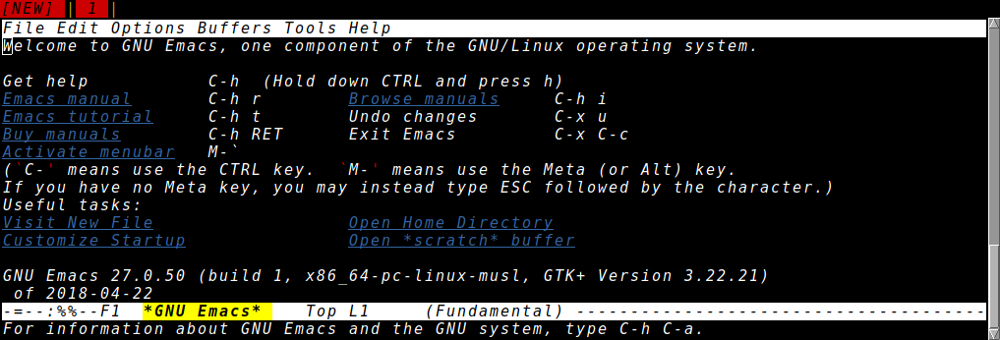
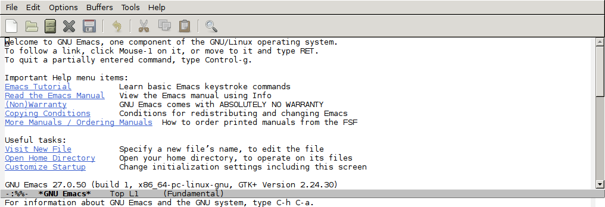
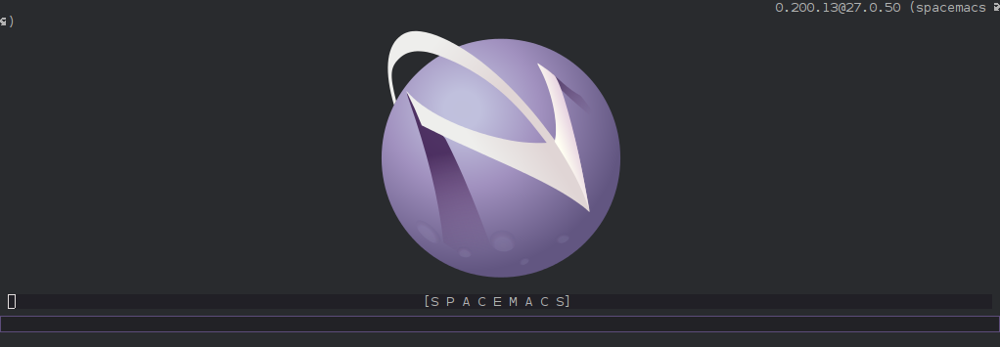

使用docker轻松体验多个版本Emacs
想体验一下最新版的Emacs？或者想测试一下插件在多个版本Emacs上是否能正常工作？ 如果一次性在电脑上编译多个版本的Emacs不仅麻烦，而且管理起来还很麻烦，尤其是当需要为不同版本的Emacs定义不同配置文件的时候。 不过还好，我们有Docker。
Silex/docker-emacs可以让你在Docker容器中运行Emacs。 而且这个项目提供了多个版本的Emacs Docker镜像。
不同Emacs版本用Tag来划分，这些tag包括：
- master (master/xenial/Dockerfile)
- master-dev (master/xenial/dev/Dockerfile)
- master-alpine (master/alpine/Dockerfile)
- 26.0, 26 (26.0/xenial/Dockerfile)
- 26.0-dev, 26-dev (26.0/xenial/dev/Dockerfile)
- 26.0-alpine, 26-alpine (26.0/alpine/Dockerfile)
- 25.3, 25, latest (25.3/xenial/Dockerfile)
- 25.3-dev, 25-dev, dev (25.3/xenial/dev/Dockerfile)
- 25.3-alpine, 25-alpine, alpine (25.3/alpine/Dockerfile)
- 25.2 (25.2/xenial/Dockerfile)
- 25.2-dev (25.2/xenial/dev/Dockerfile)
- 25.2-alpine (25.2/alpine/Dockerfile)
- 25.1 (25.1/xenial/Dockerfile)
- 25.1-dev (25.1/xenial/dev/Dockerfile)
- 24.5, 24 (24.5/xenial/Dockerfile)
- 24.5-dev, 24-dev (24.5/xenial/dev/Dockerfile)
- 24.4 (24.4/precise/autogen/Dockerfile)
- 24.4-dev (24.4/precise/autogen/dev/Dockerfile)
- 24.3 (24.3/precise/autogen/Dockerfile)
- 24.3-dev (24.3/precise/autogen/dev/Dockerfile)
- 23.4, 23 (23.4/precise/bootstrap/Dockerfile)
- 23.4-dev, 23-dev (23.4/precise/bootstrap/dev/Dockerfile)
其中以 dev 结尾的docker镜像包含多Cast，git，Python这些开发工具，另外相关Emacs代码也存在 /opt/emacs 中没有被删掉，因此容量会比较大。
而 alpine 结尾的docker镜像表示它是基于 Alpine Linux 创建的镜像，因此容量比较小。
master 版本只得是最新版的Emacs，目前为止就是 27.0 版。
因此，若我想体验一下最新版的Emacs，只需要执行
docker pull silex/emacs:master
然后只需要执行
docker run -it --rm silex/emacs:master
就能进入27.0版本的Emacs了。 
不过由于没有XServer，进入的是Emacs文本界面。
如果要进入Emacs图像界面也很简单，让容器共享主机的XServer就好了，具体方法如下：
xhost +local: # 允许本地访问Xserver docker run -it --rm -e DISPLAY -v /tmp/.X11-unix:/tmp/.X11-unix silex/emacs:master # 共享主机的Xserver

你也可以将自己的配置挂载到容器中去:
docker run -it --rm -e DISPLAY -v /tmp/.X11-unix:/tmp/.X11-unix -v ~/.emacs.d:/root/.emacs.d -v ~/.spacemacs.d:/root/.spacemacs.d silex/emacs:master
或者为了方便直接将HOME目录挂载上去
docker run -it --rm -e DISPLAY -v /tmp/.X11-unix:/tmp/.X11-unix -v ~:/root/ silex/emacs:master
